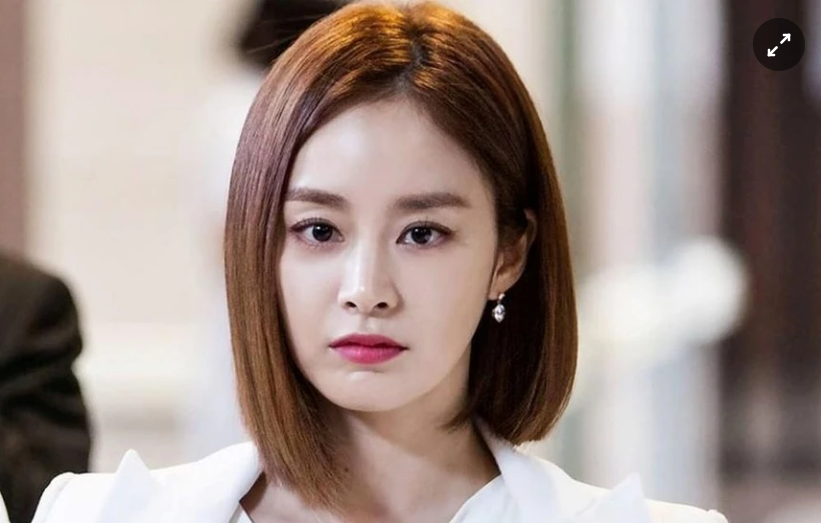
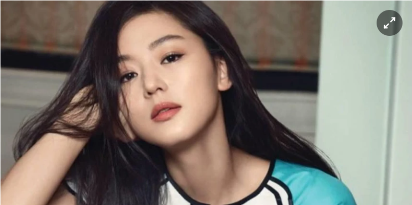
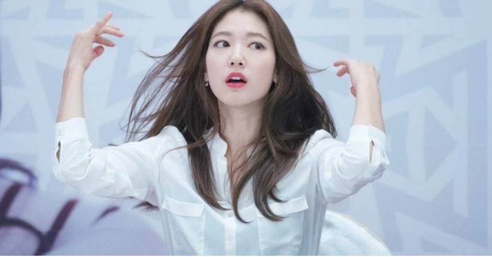
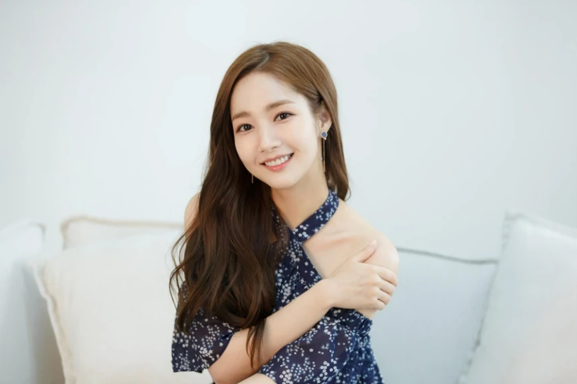
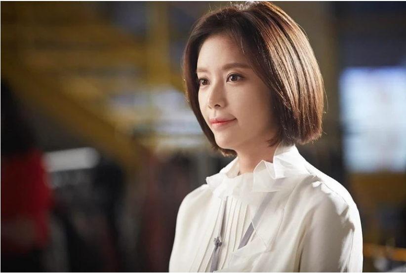

Những mỹ nhân bị chê một màu của màn ảnh Hàn Quốc
Màn ảnh Hàn có nhiều nữ diễn viên sở hữu nhan sắc xinh đẹp nhưng lối diễn xuất luôn lặp lại nhàm chán từ phim này qua phim khác.

Kim Tae Hee: Được mệnh danh là "con dâu quốc dân", nhan sắc xinh đẹp vào hàng bậc nhất làng giải trí Hàn Quốc, thế nhưng xét về sự nghiệp diễn xuất, nữ diễn viên lại không được đánh giá cao. Theo một khảo sát gần đây, trong tổng số 7.166 phiếu bầu, Kim Tae Hee đã chiếm tới 892 phiếu (12,4%), là sao hạng A có diễn xuất gây thất vọng nhất Hàn Quốc. Một số vai diễn trong những bộ phim tiêu biểu của cô như Chuyện tình Harvard, Iris, My Princess... luôn ở mức độ an toàn, diễn tròn vai, chỉ góp phần phô diễn thế mạnh nhan sắc của cô trên màn ảnh.

Jeon Ji Hyun: Đúng như biệt danh đã khiến Jeon Ji Hyun nổi tiếng- "cô nàng ngổ ngáo", tất cả những vai diễn của nữ diễn viên đều đi theo phong cách tưng tửng, hài hước, đáng yêu, thậm chí có phần bị "lố", điên điên, cường điệu quá mức. Từ Cô nàng ngổ ngáo năm 2001, cho đến "mợ chảnh" của Vì sao đưa anh tới hay nàng tiên cá muốn làm người xinh đẹp trong Huyền thoại biển xanh đều là những vai diễn giúp Jeon Ji Hyun nổi tiếng. Nhưng cô sẽ không thể tiến xa với cách diễn một màu.

Park Bo Young: Sở hữu ngoại hình tươi sáng, trẻ trung với đôi mắt biết nói cùng nụ cười rạng rỡ, Park Bo Young luôn được các đạo diễn lựa chọn vào những dạng vai học đường hoặc tình cảm nhẹ nhàng, đáng yêu. Một số bộ phim nổi bật mà cô tham gia như: A Werewolf Boy, Oh my ghost, Strong Women Do Bong Soon, On Your Wedding Day, Hot Young Bloods... đều gây được sự chú ý và thành công về mặt doanh thu. Tuy nhiên, trong bộ phim mới nhất của mình- Abyss, đóng cặp với Ahn Hyo Seop, khán giả dần nhận ra thực chất nữ diễn viên chỉ đang lặp lại chính mình với cách diễn xuất cũ.

Park Shyn Hye: Nếu Đài Loan có Trần Kiều Ân từng được mệnh danh là "nữ hoàng phim thần tượng", Trung Quốc có Trịnh Sảng là "nữ hoàng thanh xuân" thì Hàn Quốc có "nữ hoàng mau nước mắt" Park Shyn Hye. Cô là nữ diễn viên thường hay hóa thân vào vai nữ chính con nhà nghèo, mau nước mắt, vươn lên vượt khó, luôn được nhiều chàng trai tốt săn đuổi. Điểm chung dễ nhận thấy nhất trong các dạng vai này là tính cách yếu đuối, nhẹ nhàng, trong sáng, khiến cho trái tim nam chính dễ động lòng. Có thể kể ra một loạt những vai diễn như thế trong Heartstrings, You’re Beautiful, Flower Boys Next Door... Khán giả vẫn chờ một sự đổi khác của Park Shyn Hye.

Park Min Young: Nữ diễn viên bị cho là không có sự thay đổi trong việc làm mới bản thân, những vai diễn lặp lại na ná nhau như trong City Hunter (2011), Healer (2014), Remember (2015)... hay gần nhất là Her Private Life khiến cô mất dần sức hút. Trước đó dù Thư ký Kim sao thế? là một bước tiến của Park Min Young nhưng khán giả vẫn mong chờ thần tượng của mình lột xác hơn thế.

Hwang Yung Eum: Kill Me Heal Me (2015), She Was Pretty (2015), Lucky Romance (2016)... mang lại thành công vang dội cho Hwang Yung Eum bởi khả năng diễn xuất cường điệu, "điên" bất chấp, không ngại làm xấu của cô trên màn ảnh. Thỉnh thoảng nữ diễn viên hay có những biểu cảm trợn mắt, phồng má, miệng há hốc rồi bất chợt hét to trước màn ảnh. Nét cá tính riêng biệt này tạo nên một Hwang Yung Eum không thể trộn lẫn, tuy nhiên, so với chính mình, cô đang không thể thoát ra được bản thân.